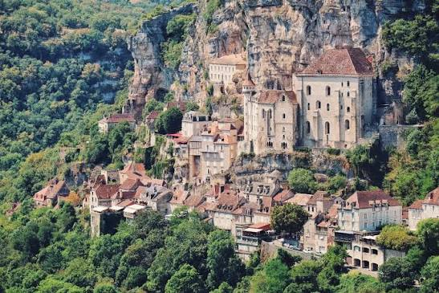

Pèlerinage
à
Rocamadour


⟹ Haut Lieu de Pèlerinage ⟸
Bâtie à flanc de falaise dans la vallée encaissée de l'Alzou, la cité religieuse de Rocamadour tire son essor de la découverte, en 1166, d'un corps intact enterré près de la chapelle mariale, aussitôt identifié à un ermite légendaire nommé saint Amadour. Cette découverte, associée à une série de guérisons miraculeuses, déclenche un afflux de pèlerins sans précédent dans la région.

Dès le XIIe siècle, Rocamadour devient l'un des grands sanctuaires marials de la chrétienté médiévale, visité par des rois de France et d'Angleterre, dont Saint Louis à plusieurs reprises, Philippe le Bel et Henri II Plantagenêt, venus honorer la statue de la Vierge noire logée dans la chapelle Notre-Dame.
La cloche suspendue au-dessus de l'autel, dite « cloche miraculeuse », aurait sonné d'elle-même pour annoncer, jusqu'en haute mer, l'exaucement d'un vœu formulé au sanctuaire. Une épée fichée dans la roche, présentée depuis le XIXe siècle comme la légendaire Durandal de Roland, ajoute encore à l'aura du lieu.
Après un déclin marqué par les guerres de Religion et la Révolution, le sanctuaire connaît une restauration importante au XIXe siècle et retrouve sa vocation de haut lieu de pèlerinage, aujourd'hui reconnu comme Grand Site de France et classé au titre des Monuments historiques.
« Rocamadour, roc et amour, où la pierre elle-même semble prier. »
— Expression traditionnelle associée au sanctuaireRocamadour demeure un lieu de culte actif : messes régulières, pèlerinages diocésains et cérémonies mariales continuent de rythmer la vie de la cité religieuse tout au long de l'année.
Chaque 8 septembre, jour de la Nativité de la Vierge, un pèlerinage traditionnel rassemble fidèles et visiteurs autour de la chapelle Notre-Dame, perpétuant une dévotion mariale vieille de huit siècles.
Le sanctuaire accueille aussi, tout au long de l'année, des marcheurs venus par le détour depuis les chemins de Compostelle, mêlant démarche spirituelle et randonnée culturelle.
Érosion de la falaise : la stabilité du site accroché à la roche calcaire nécessite une surveillance géologique constante.
Restauration du bâti : chapelles, escaliers et fortifications médiévales demandent un entretien continu et coûteux.
Tourisme de masse : concilier forte fréquentation estivale et préservation du caractère sacré et intime du sanctuaire reste un défi permanent.
Transmission spirituelle : maintenir vivante la dimension de recueillement du lieu face à sa dimension touristique croissante.
Au-delà de la visite touristique, plusieurs gestes traditionnels permettent de vivre le site dans l'esprit de ses huit siècles de pèlerinage.
Monter le grand escalier à genoux geste de dévotion traditionnel encore pratiqué par certains pèlerins jusqu'à la chapelle Notre-Dame.
Assister à une messe ou à une célébration mariale dans la basilique Saint-Sauveur ou la chapelle Notre-Dame.
Parcourir le chemin de croix qui s'élève depuis la cité jusqu'au château, offrant un point de vue sur toute la vallée.
Visiter le musée d'art sacré qui conserve les objets liés à huit siècles de pèlerinage.